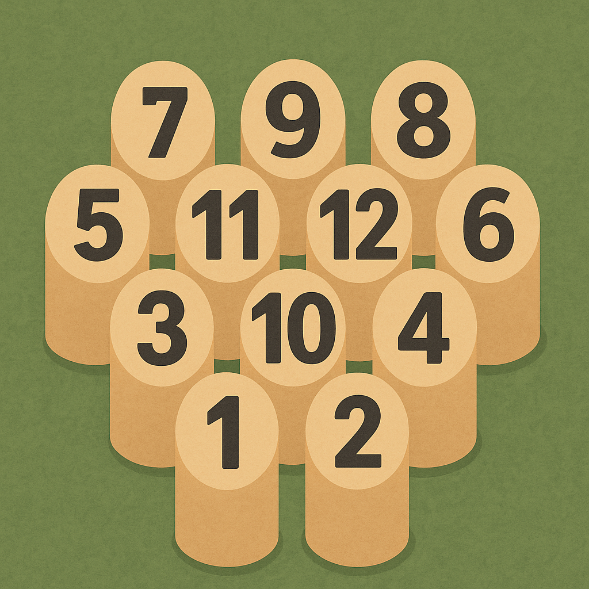

Objectif: 50 points
En attente
🏆 Victoire !
📋 Règles du Mölkky

- Objectif : Atteindre exactement 50 points
-
Score : Renverser 1 quille = son numéro, plusieurs
quilles = nombre de quilles tombées
-
Dépassement : Si vous dépassez 50 points, votre
score retombe à 25
-
Élimination : 3 lancers ratés consécutifs =
élimination
-
Victoire : Premier à atteindre exactement 50 points
-
Distance : Lancer depuis la ligne de lancement (3-4
mètres des quilles)
-
Quilles : Les quilles sont remises en place sur le
terrain depuis leur base